Лечение под микроскопом
Лечение под микроскопом01
Лечение под микроскопом
Микроскоп помогает работать в труднодоступных местах, точно и бережно убирать поражённые ткани.
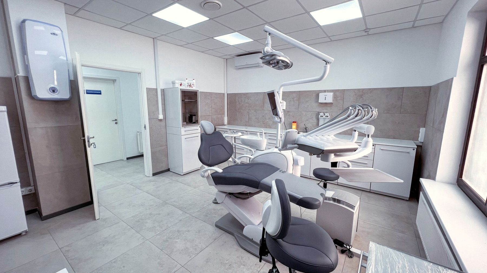
Терапия, имплантация, протезирование, ортодонтия и детский приём. Ежедневно с 9:00 до 21:00 на Громова, 10/2.
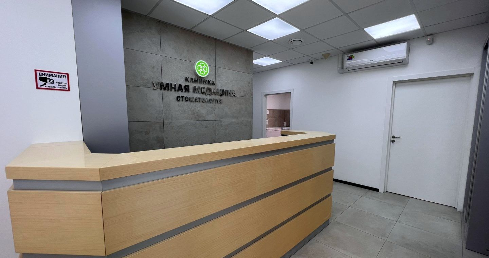
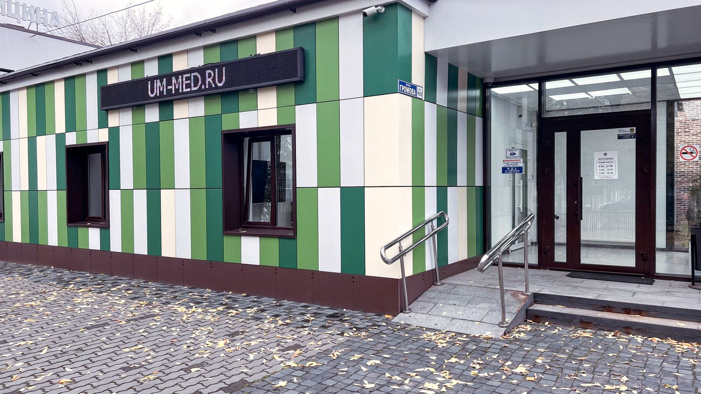

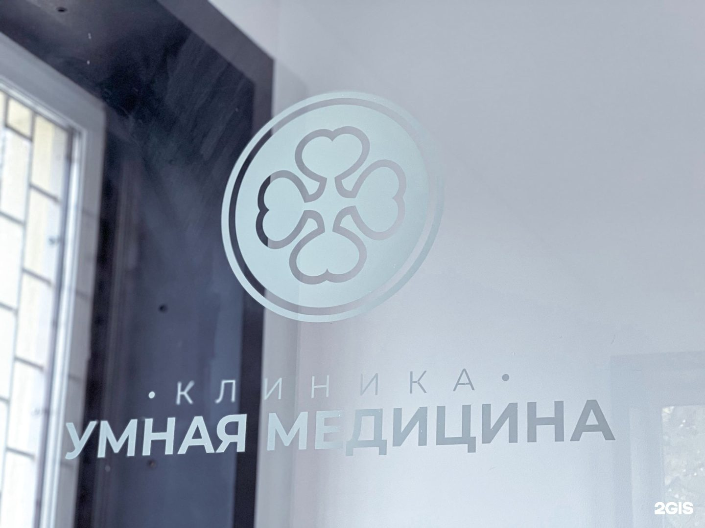
Мы меняем представление о походе к стоматологу: спокойно, понятно и без боли.
«Умная Медицина» — современная стоматология в Удельной, рядом с Жуковским. Команда опытных врачей и современное оборудование позволяют проводить как простые, так и сложные процедуры: от профилактики и лечения кариеса до имплантации, протезирования и исправления прикуса.
Наша задача — доступная и качественная стоматологическая помощь для жителей Жуковского, Раменского, Быково, Ильинского, Красково, Малаховки и Островцов. Мы работаем с качественными материалами, современной анестезией и диагностикой, которая помогает найти проблему на ранней стадии.
Здоровая и красивая улыбка — лучшая инвестиция в будущее и уверенность в себе.
Лечение зубов с комфортом
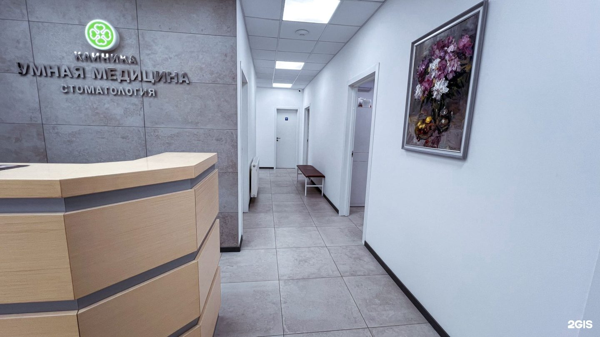
Фото клиники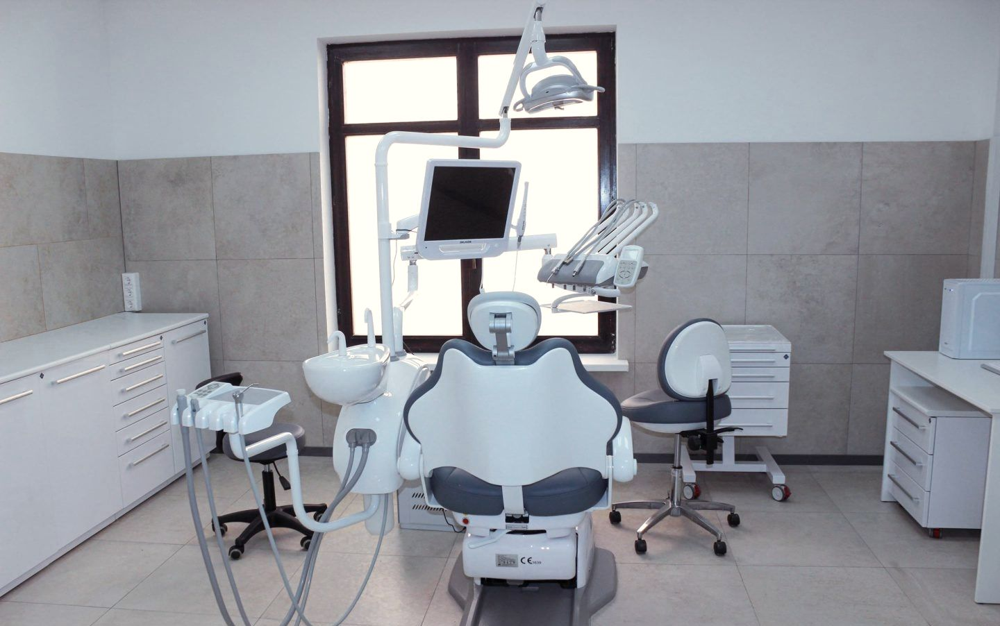
Фото клиники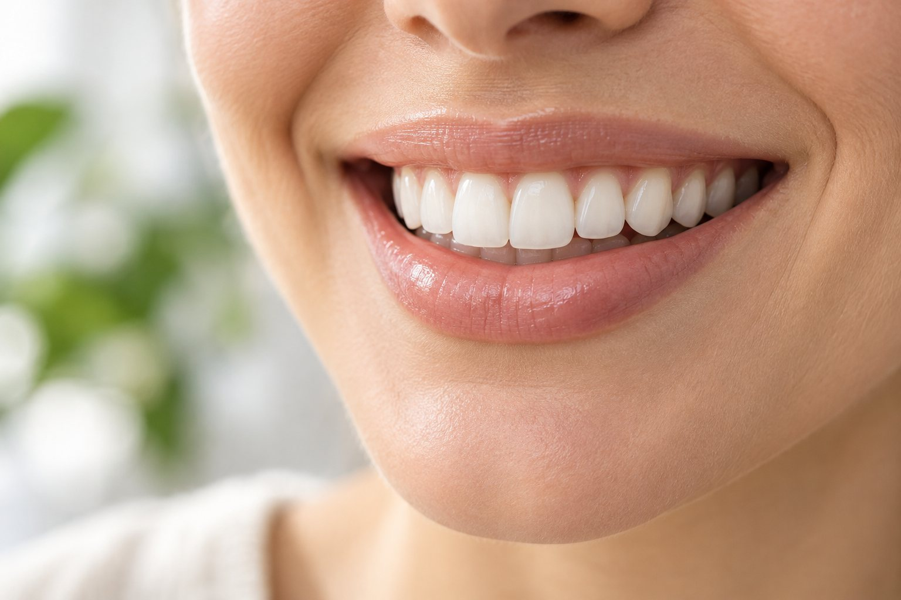
Фото клиники Фото клиники
Фото клиники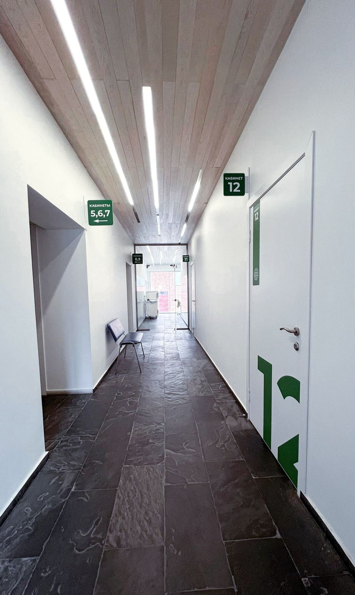
Фото клиникиФото клиники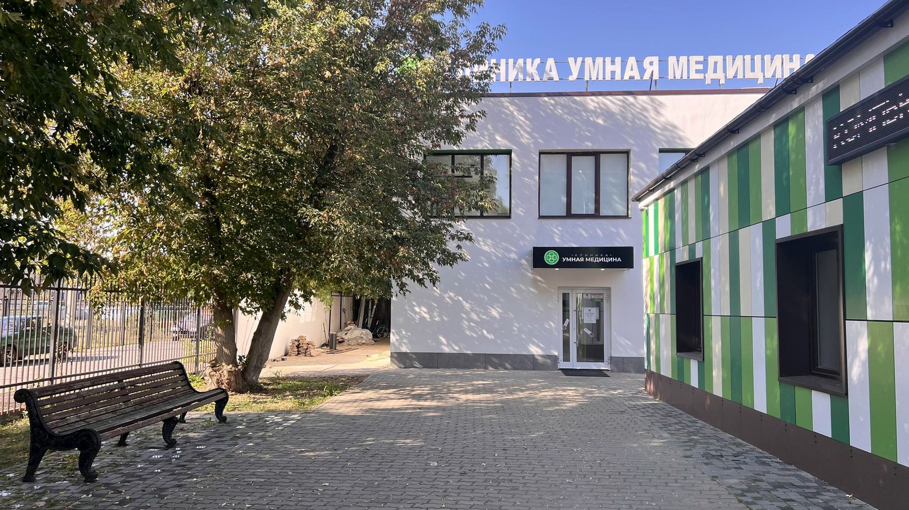
Фото клиникиШесть причин, по которым пациенты из Жуковского и Раменского выбирают «Умную Медицину».
Лечение под микроскопомМикроскоп помогает работать в труднодоступных местах, точно и бережно убирать поражённые ткани.
Современная анестезия: лечение проходит спокойно, без боли и лишнего стресса.
Терапевты, хирурги-имплантологи, ортопеды, ортодонт и детский стоматолог работают в одной клинике.
 Снимки и КТ на месте
Снимки и КТ на местеПрицельный и панорамный снимок, КТ челюстей делаем в клинике. За снимком никуда ехать не нужно.
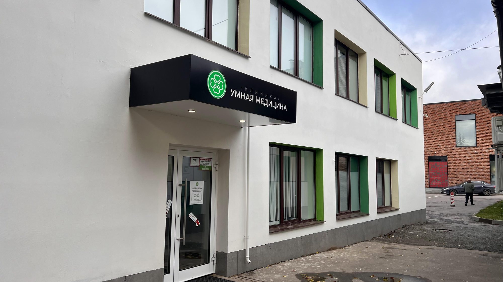
Рядом многопрофильная клиникаАнализы, терапевт, кардиолог и другие врачи «Умной Медицины» работают по соседству, на Громова, 10.
Врач подробно объясняет план лечения и стоимость. Цены демократичные, действует программа лояльности.
Запишитесь на приём и сделайте шаг к здоровой улыбке.
Записаться на приёмПередвиньте ползунок, чтобы сравнить «до» и «после». Сейчас это шаблоны: фото работ врачей добавим, когда их передаст клиника.
Шаблон карточки. Фото работы, сроки лечения и врача предоставит клиника.
Шаблон карточки. Фото работы, сроки лечения и врача предоставит клиника.
Шаблон карточки. Фото работы, сроки лечения и врача предоставит клиника.
Шаблон карточки. Фото работы, сроки лечения и врача предоставит клиника.
Шаблон карточки. Фото работы, сроки лечения и врача предоставит клиника.
Шаблон карточки. Фото работы, сроки лечения и врача предоставит клиника.
Шаблон карточки. Фото работы, сроки лечения и врача предоставит клиника.
Шаблон карточки. Фото работы, сроки лечения и врача предоставит клиника.
Шаблон карточки. Фото работы, сроки лечения и врача предоставит клиника.
КТ и снимки
01
Делаем прицельные снимки, панорамный снимок ОПТГ и трёхмерные снимки зубов и челюстей. Снимки можно отправить на электронную почту.
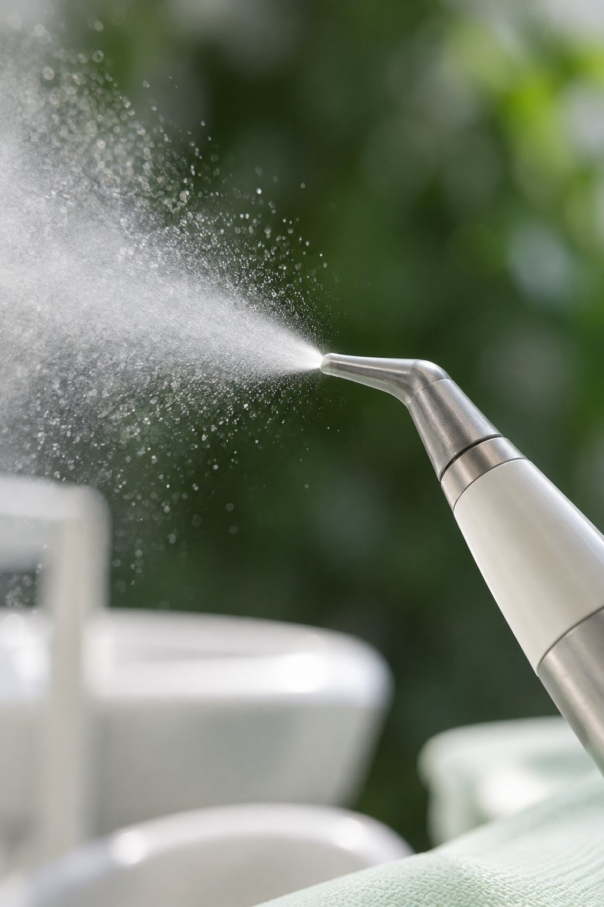
Профгигиена Air-Flow 02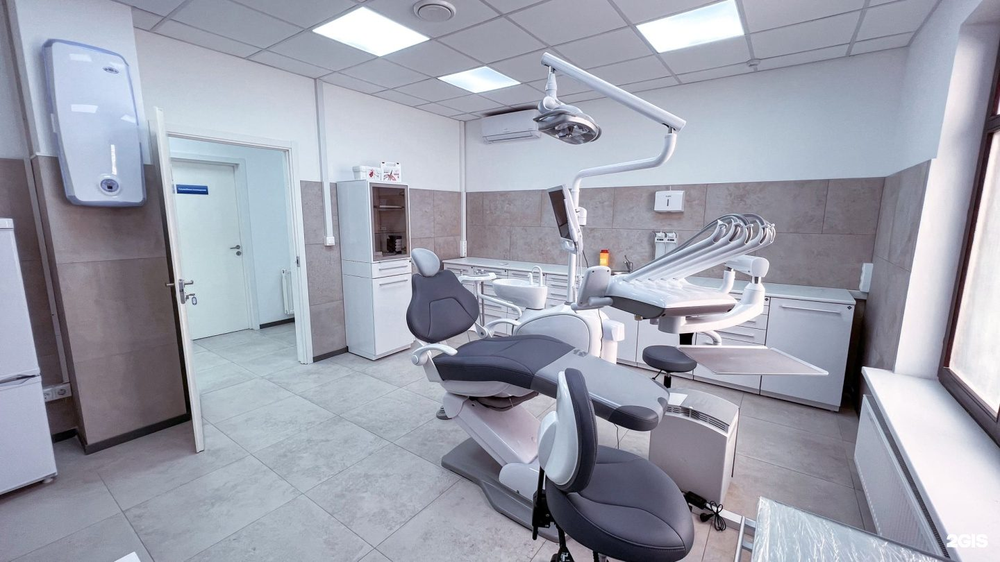
Имплантация зубов 04 All-on-4 и All-on-6
05
All-on-4 и All-on-6
05
Лечебные кабинеты, 3D-томограф Vatech, панорамный рентген и стерилизационная. Фото из карточек клиники в 2ГИС и Яндекс Картах.


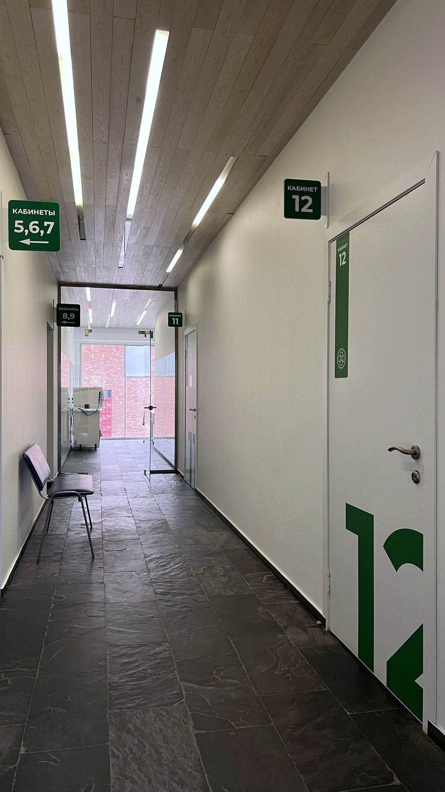
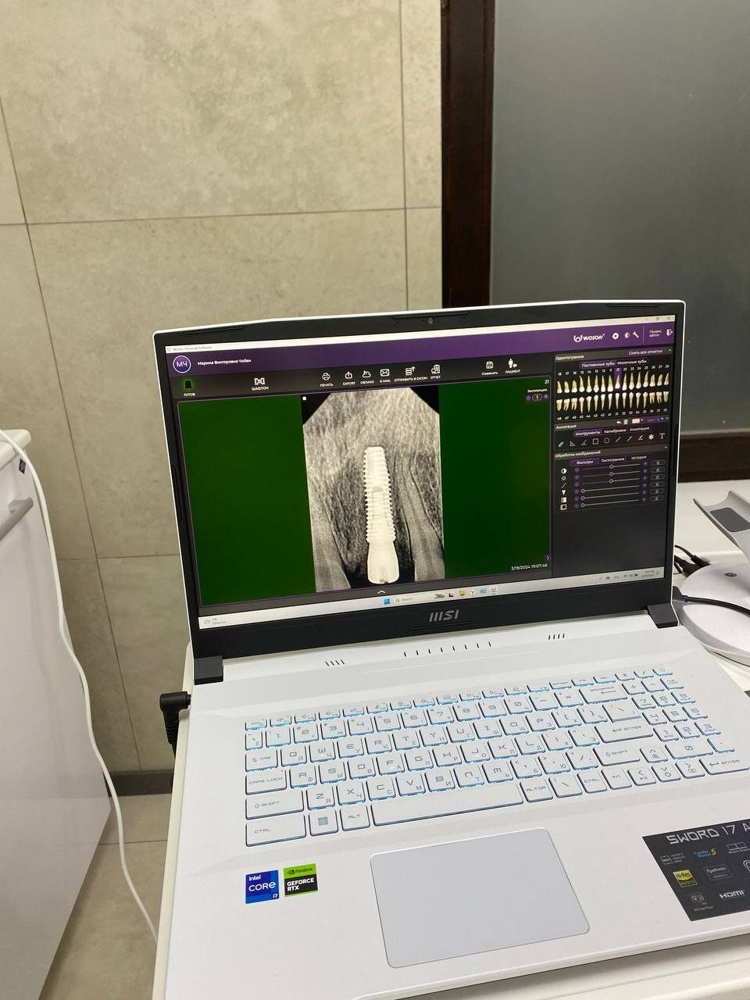
Мы верим, что улыбка — это не только эстетика, но и здоровье, и уверенность в себе.
Семь врачей: терапевты и эндодонтисты, хирурги-имплантологи, ортопеды, ортодонт и детский стоматолог. Стаж и рейтинги взяты с ПроДокторов.
Хирург, имплантолог
Хирург, имплантолог
Терапевт, эндодонтист, гигиенист
Терапевт, ортодонт, гигиенист
Ортопед
Ортопед
Детский стоматолог
Цены на 15.10.2026. Точную стоимость врач называет после осмотра и записывает в план лечения.
Врач осматривает полость рта, при необходимости направляет на снимок прямо в клинике и составляет план лечения с ценой. Консультация терапевта, ортопеда, хирурга и имплантолога с планом лечения бесплатная.
Прицельный снимок (500 ₽), панорамный снимок ОПТГ (1 700 ₽), трёхмерный снимок участка 5×5 см (2 000 ₽) и двух челюстей (4 500 ₽).
Да. Микроскоп с увеличением в 25–40 раз помогает найти скрытые поражения и трещины, бережно пролечить каналы и закрыть перфорацию.
Да. В клинике делают закрытый и открытый синус-лифтинг и костную пластику. Нужна ли она, хирург скажет по КТ.
Установка импланта стоит от 19 300 ₽, металлокерамическая коронка на имплант от 27 400 ₽, циркониевая от 35 100 ₽. Точную сумму хирург называет после КТ.
Osstem, Dentium и Straumann. Систему врач подбирает по клинической ситуации и бюджету.
Это восстановление всей челюсти несъёмным протезом на четырёх или шести имплантах. Хирургический этап All-on-4 стоит от 114 000 ₽.
Каждую среду профессиональная гигиена Air-Flow стоит 4 500 ₽ вместо 5 790 ₽. Консультация хирурга-имплантолога и 3D-снимок бесплатно.
Лечение проходит под местной анестезией. В клинике используют препараты «Скандонест», «Ультракаин», «Убистезин» и «Артикаин».
Да. Детский стоматолог лечит и удаляет молочные зубы, делает фторирование и герметизацию фиссур.
Врач снимает зубной камень и налёт, чистит зубы методом Air-Flow, полирует их и даёт рекомендации по уходу.
Пгт Удельная, ул. Громова, 10/2, рядом с Жуковским. Рядом, на Громова, 10, работает многопрофильная клиника «Умная Медицина».
Ежедневно с 9:00 до 21:00, без выходных.
Онлайн на сайте, выбрав услугу, врача и время, или по телефону +7 495 150-36-15.
Стоматология на Громова, 10/2 в Удельной. По соседству, на Громова, 10, работает многопрофильная клиника «Умная Медицина».